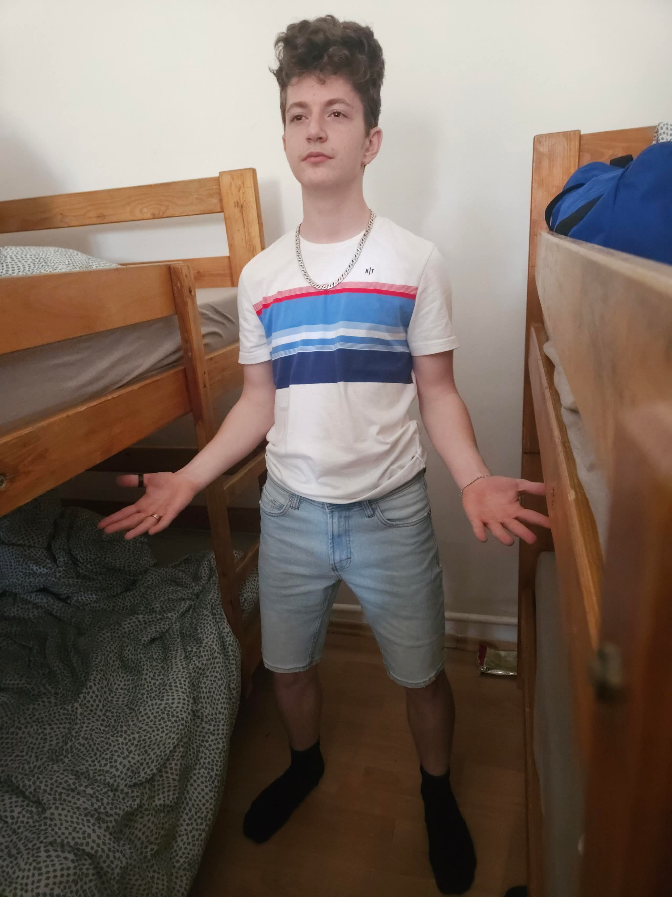
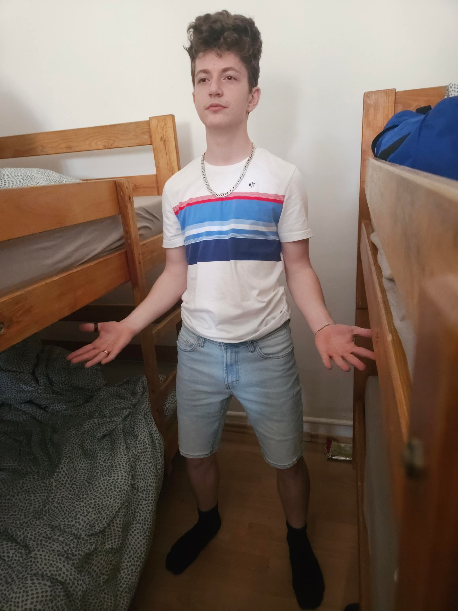

|
Személyes adatokNév: Mag LórántNem: Férfi Születési hely: Aprajafalva Születési idő: Eső után Állampolgárság: Nincs Kedvenc zenéje: |
Története:Mag Lóránt – vagy ahogy Aprajafalván emlegetik: „A Fiú, Akinek Az Egész Világ Belefér a Fejébe… Mert Konkrétan Olyan Nagynak Látszik a Fisheye-től” – már messziről felismerhető. Sőt, közelről még inkább. A legenda szerint Lóránt nem is járt iskolába, egyszerűen csak ráhajolt a könyvre, és már tudott is mindent belőle. Születési hely: Aprajafalva Aprajafalva lakói kis termetűek, gyorsak, és mindig valami alkotással foglalatoskodnak… A faluba egyszer beesett egy különösen nagy eső, és amikor elállt, egyetlen kisfiú maradt ott a pocsolya közepén: Lóránt. Azóta is úgy tartják, hogy Lóránt az eső után nőtt ki a földből, mint egy ritka gomba, csak sokkal hangosabban és sokkal több fura ötlettel. Születési idő: Eső után Tökéletes időpont. Pontosan olyan, amilyen Lóránt személyisége: kiszámíthatatlan, random, és teljesen értelmezhetetlen a meteorológiai szolgálat számára. A helyiek szerint az eső után olyan fény villant az égen, mintha valaki vakuval fotózott volna – de ahogy később kiderült, csak Lóránt jött világra. Állampolgárság: Nincs Nem azért, mert jogi probléma lenne – hanem mert egyik ország sem akarja elsőként kezelni az ügyét. Mindegyik azt mondta: „Előbb próbálja ki valaki más.” Így Lóránt a világ első önálló, független entitása, akit csak úgy nevezünk: „Lóránt Köztársaság”. A híres „nézek rád, és már félsz” tekintet A fő képen Lóránt olyan közelről látható, hogy a NASA is elemzi a pupilláját. A tekintete azt üzeni: „Éppen most készülök valami rosszra.” vagy: „Már el is követtem.” vagy: „Nem tudom, mi van, de nekem tetszik.” A mellékképek tanúsága A többi fotón Lóránt még több legendás formájában tündököl: A szelfis harcos, aki semmitől sem fél… csak a reggeli ébresztőtől. A pizsamás testépítő, aki 0% izommal, de 100% lelkesedéssel pózol. A „csak benéztem a kamerába” arc, ami mindenkit megijeszt… még önmagát is néha. |
Kapcsolódó körözésekTanár bosszantása – Btk. 420.§Órai rendbontás – Btk. 666.§ |